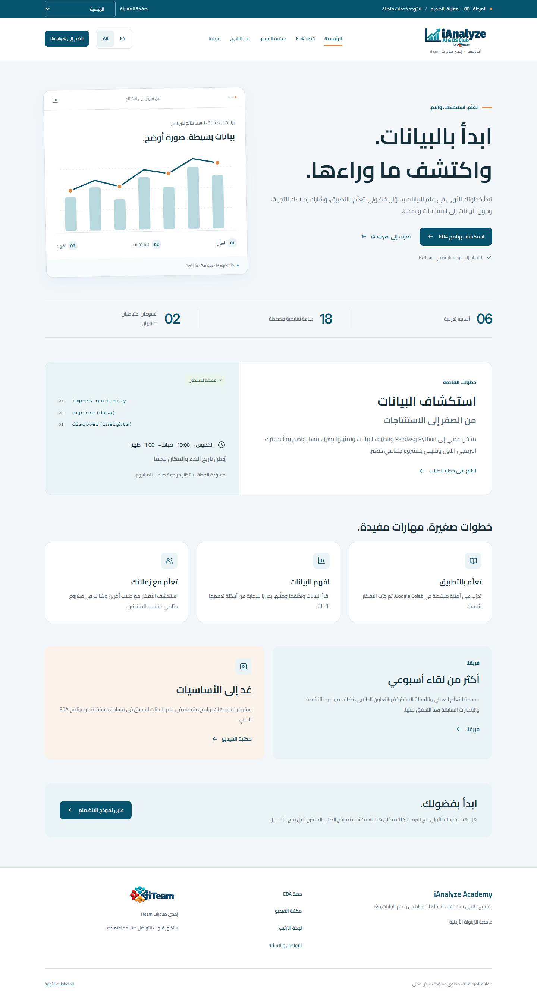

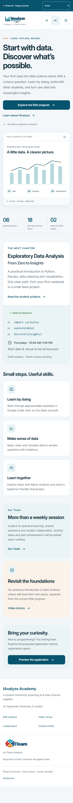

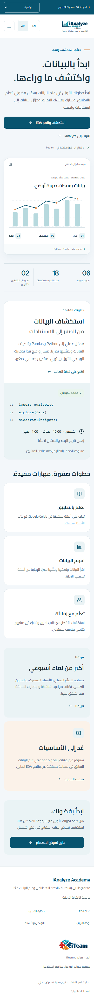

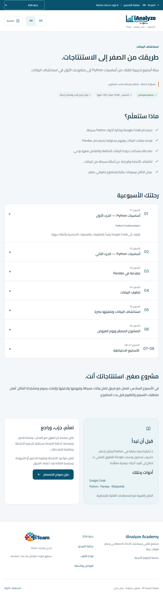

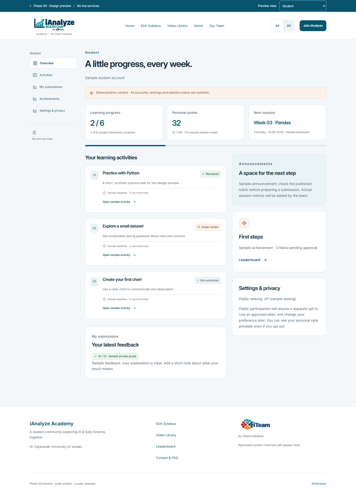

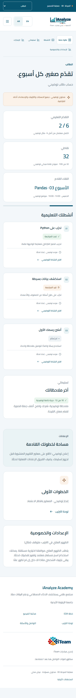

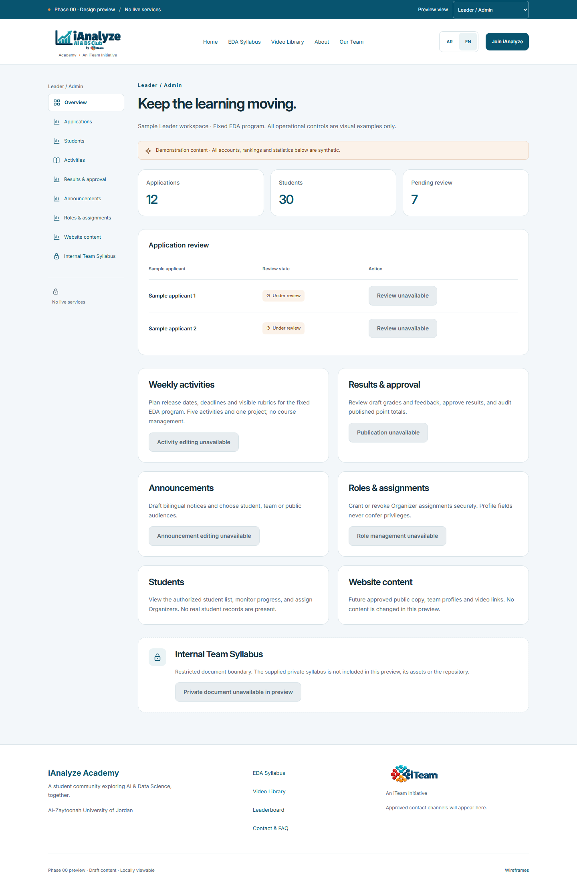

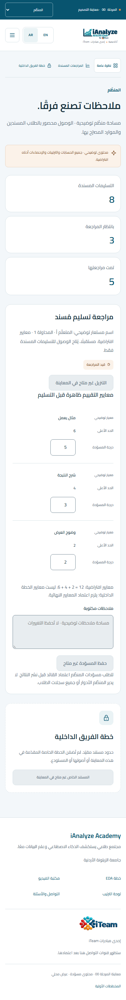

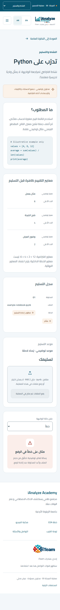

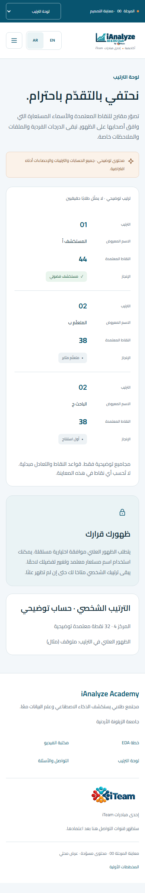

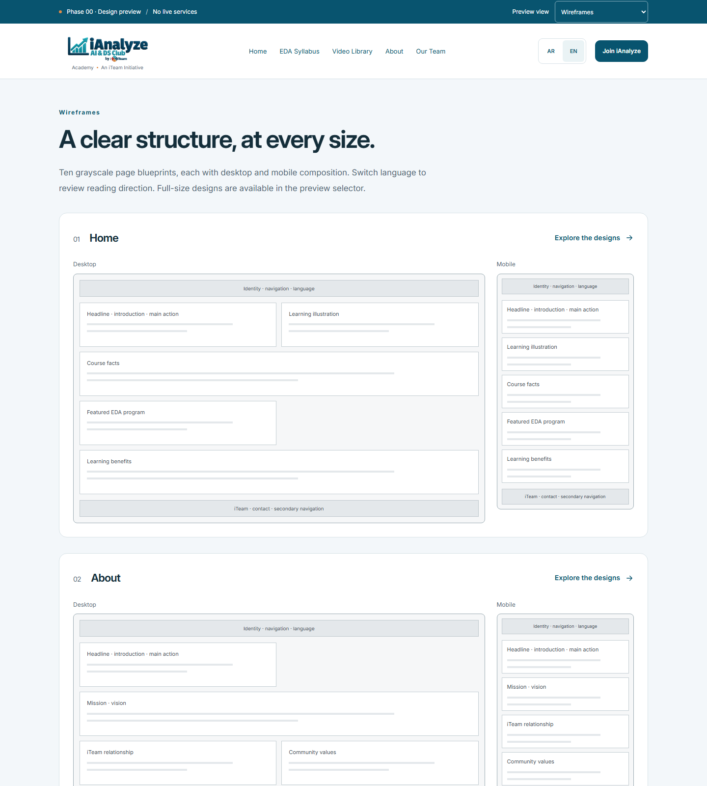
Twelve browser captures. Click any image for the original PNG. All dashboard records are synthetic; no services are connected.
Open the interactive static preview · Read the review report











Chrome captures on 31 October 2026. These are responsive desktop-browser emulations, not real-device screenshots. See the full report for accessibility and testing limits.